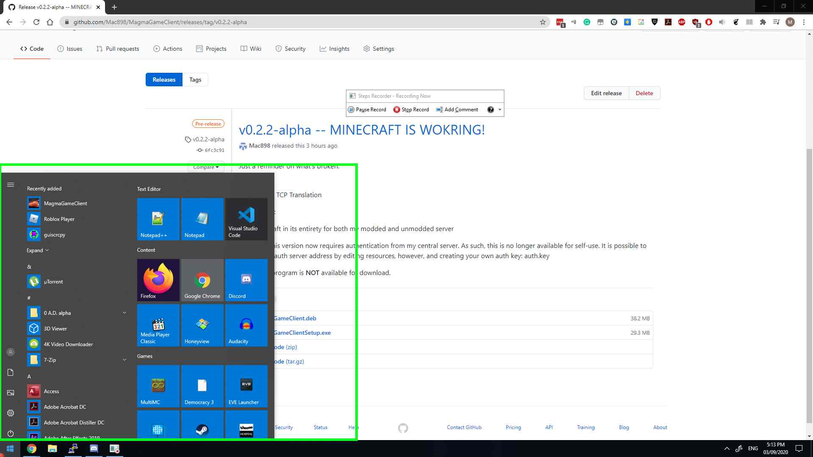
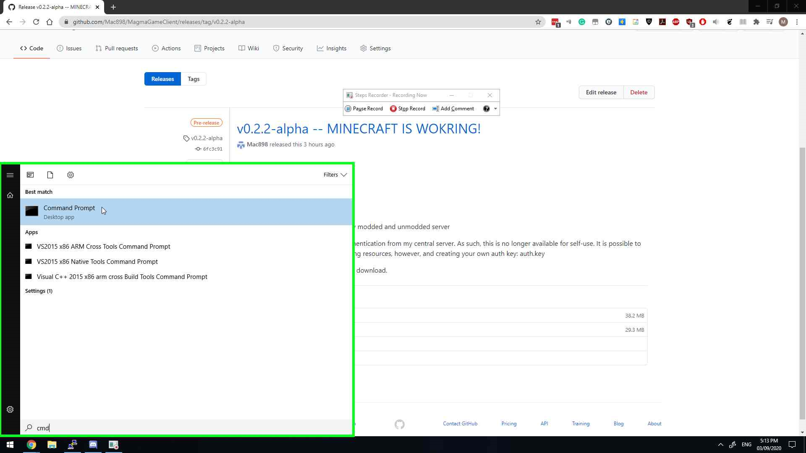
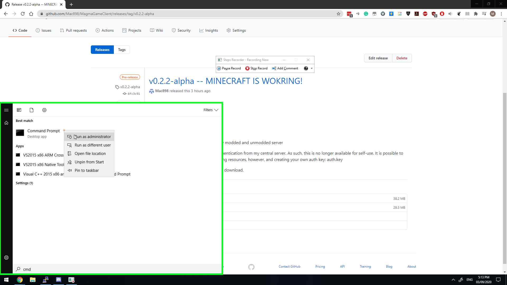
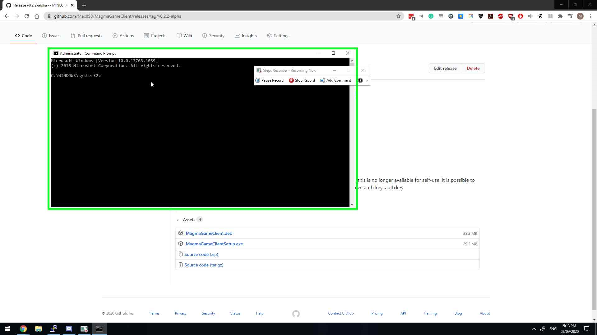
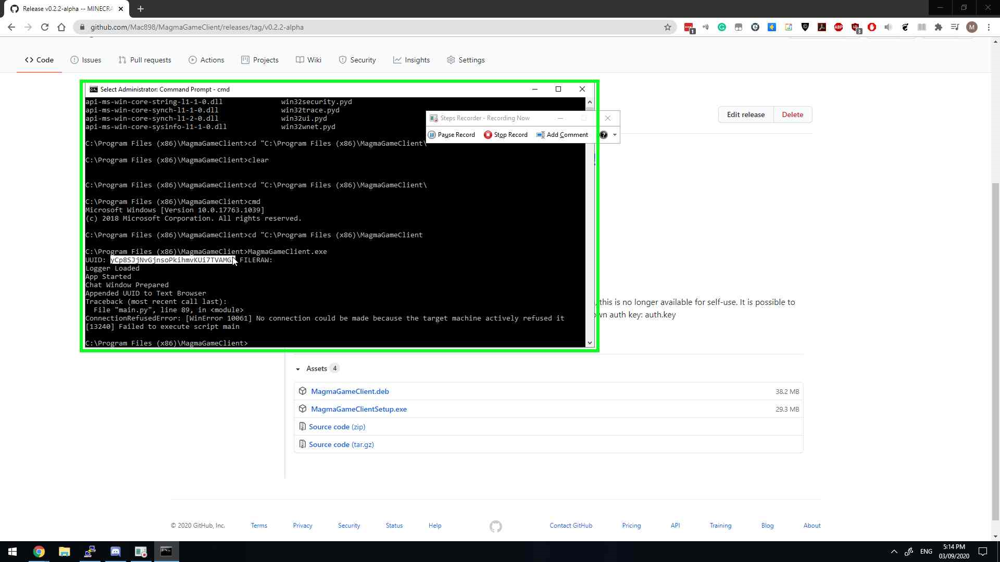

1. Download windows or linux install file @ HERE
In the installer:
- User left click on " MagmaGameClientSetup.exe "
- User left click on "Next > (button)" in "Mag"
- User left click on "Install (button)" in "Mag"
- User left click on "Next > (button)" in "Mag"
- User left click on "Run MagmaGameClient (check box)" in "Mag"
- User left click on "Finish (button)" in "Mag"
2. Open cmd with admin privileges, enter | cd "C:\Program Files (x86)\MagmaGameClient" |





3. Enter | MagmaGameClient.exe | on windows, or | ./MagmaGameClient | on Linux.

4. DM The UUID seen at the top.
5. Await a response. Once a response has been had, launch the app with admin via Windows Search and or Linux Search
6. Tick the game you would like to run.
Enjoy